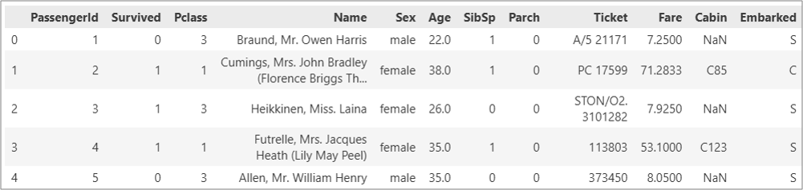
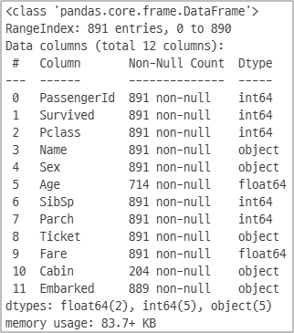

❇️ 타이타닉 데이터셋 이해
1️⃣ 데이터셋 정보 파악하기
✔️ 'data/titanic.csv' 파일 읽어와 기본 정보를 파악한다
- 데이터프레임의 shape, 컬럼별 타입과 결측치를 파악
import pandas as pd
df = pd.read_csv('data/titanic.csv')
print(df.head())
print(df.info())


❇️ 데이터 처리·분석을 위한 프롬프트 가이드
1단계: 데이터 파악 및 탐색적 데이터 분석 (EDA)
가장 먼저 데이터의 구조를 이해하고 결측치나 이상치를 확인해야 합니다.
> 프롬프트 예시:
"타이타닉 데이터셋(titanic.csv)을 불러오고 데이터의 구조(Shape), 컬럼명, 데이터 타입을 요약해 줘.
특히 각 컬럼별 결측치 현황을 파악하고, 수치형 데이터의 기초 통계량(평균, 표준편차 등)을 보여주는 Python 코드를 작성해 줘."
2단계: 데이터 전처리 (Data Cleaning & Engineering)
AI에게 도메인 지식을 활용한 데이터 정제를 요청하는 단계입니다.
> 프롬프트 예시:
데이터 전처리를 진행할 거야. 다음 조건에 맞춰 코드를 작성해 줘.
- 'Age'의 결측치는 'Pclass'와 'Sex'별 중앙값으로 채워줘.
- 'Embarked'의 결측치는 최빈값으로 채우고, 'Cabin'은 결측치가 너무 많으니 삭제해 줘.
- 'Name' 컬럼에서 호칭(Mr, Mrs, Miss 등)을 추출해 'Title'이라는 새로운 컬럼을 만들어 줘.
- 범주형 변수인 'Sex'와 'Embarked'는 원-핫 인코딩(One-Hot Encoding)을 적용해 줘.
3단계: 가설 기반 시각화 분석
단순한 차트가 아니라, 비즈니스 질문(생존율에 영향을 미치는 요소)에 답하는 시각화를 요청합니다.
> 프롬프트 예시:
생존에 영향을 미치는 주요 요인을 분석하고 싶어. Seaborn 라이브러리를 사용해 다음 시각화를 수행해 줘.
- 객실 등급(Pclass)과 성별(Sex)에 따른 생존율 변화를 보여주는 막대 그래프.
- 연령(Age)에 따른 생존자/사망자 분포를 비교하는 KDE 플롯.
- 가족 수('SibSp' + 'Parch')와 생존율의 상관관계를 보여주는 히트맵.
- 각 그래프가 시사하는 바를 데이터 전문가 관점에서 해석해 줘.
4단계: 머신러닝 모델링 및 평가
데이터를 학습시켜 예측 모델을 만드는 단계입니다.
> 프롬프트 예시:
생존 여부('Survived')를 예측하는 머신러닝 모델을 만들 거야.
- 데이터를 학습용(Train)과 테스트용(Test)으로 8:2 비율로 분리해 줘
- Random Forest 분류기를 사용해 학습을 진행하고, 테스트 데이터에 대한 정확도(Accuracy), 정밀도(Precision), 재현율(Recall)을 산출해 줘
- 모델이 판단하기에 생존 예측에 가장 중요하게 작용한 변수(Feature Importance) TOP 5를 시각화해 줘
5단계: 결과 요약 및 대시보드 기획 (Streamlit 연계)
분석 결과를 비전문가도 이해할 수 있게 정리하고 시각화 도구로 확장합니다.
> 프롬프트 예시:
지금까지의 분석 결과를 종합해서 '타이타닉 생존 핵심 요인 보고서' 초안을 작성해 줘.
그리고 이 분석 결과를 Streamlit 대시보드로 옮기려고 해.
사용자가 객실 등급이나 성별을 선택하면 실시간으로 생존 확률을 시뮬레이션해 주는 인터랙티브 대시보드의 파이썬 코드 구조를 짜줘.